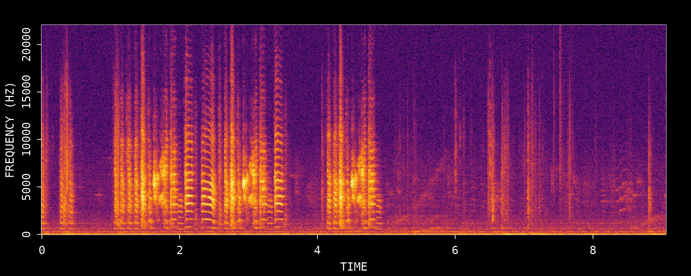
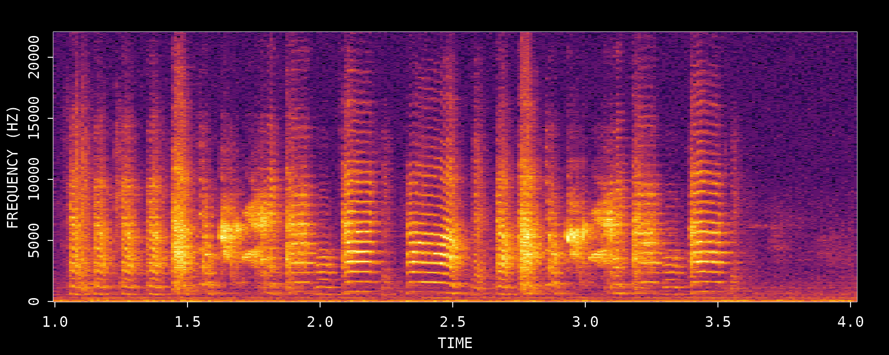
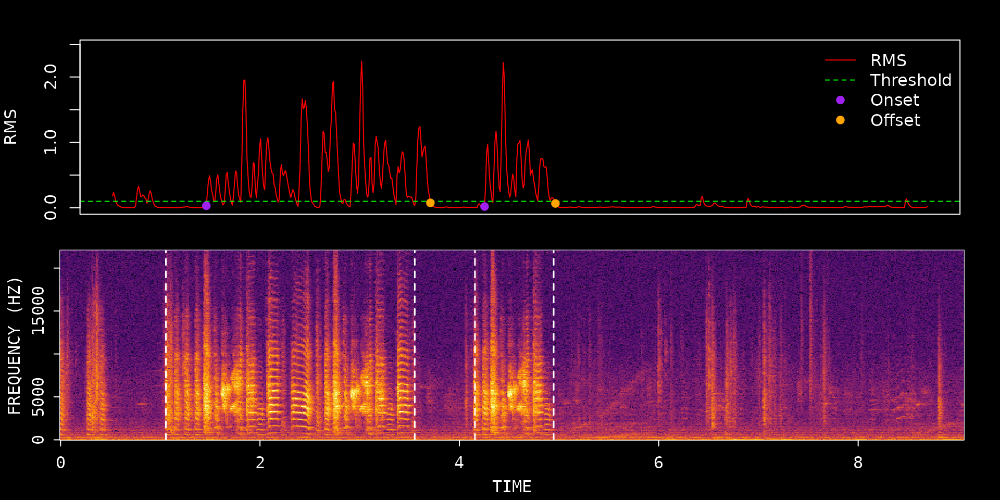
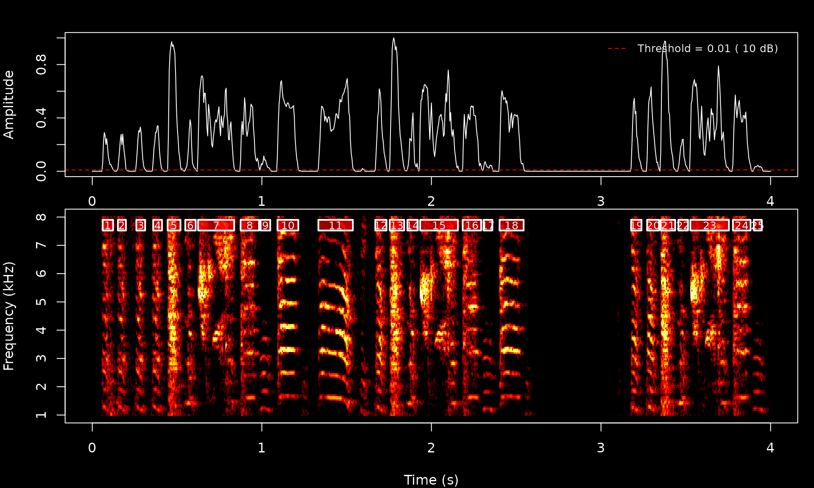
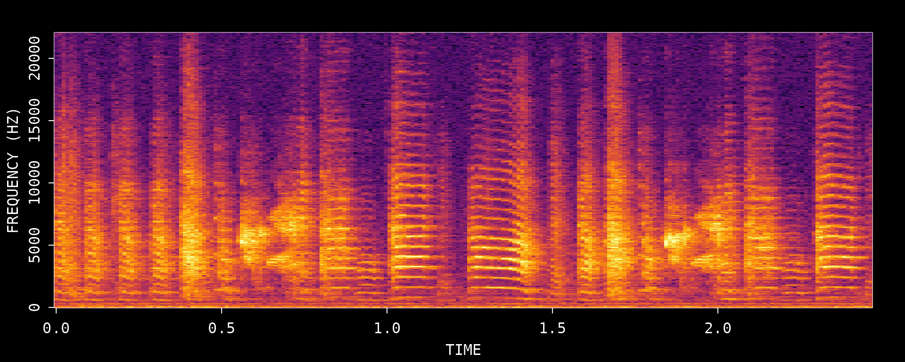
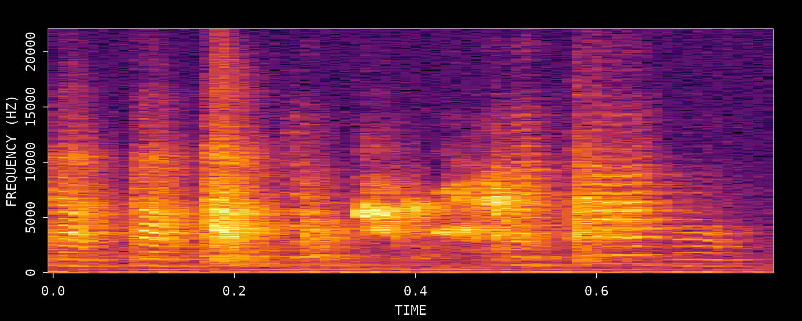

Introduction
This vignette is the quickest way to get oriented with ASAP on a single WAV file. While ASAP is designed for large-scale longitudinal studies, the core functions work directly on individual recordings, which makes them a useful starting point for learning the workflow.
The goal here is not to exhaust every function in the package. Instead, this article introduces the basic sequence most users need when first opening a new recording: inspect the song, detect bouts, segment syllables, and export a clean example clip.
What you will learn:
- How to inspect a WAV file with ASAP spectrogram tools
- How to detect bouts and segment syllables in a single recording
- How to export a detected bout as a standalone WAV clip
Overview
Single-file analysis is the fastest way to understand how ASAP behaves before moving on to SAP-object workflows. The same core functions used here also power the larger longitudinal tutorials, but running them on one example file makes it much easier to tune parameters and visually check the results.
Setup
library(ASAP)
#> ASAP v0.3.5 loaded.
# Get path to example WAV file included with the package
wav_file <- system.file("extdata", "zf_example.wav", package = "ASAP")1. Audio Visualization
The visualize_song() function creates spectrogram
visualizations of audio recordings. This is often the first step when
inspecting a new recording.
Full recording
visualize_song(wav_file)
#> Song visualization completed for: zf_example.wavSpecific time window
You can focus on a smaller time range with
start_time_in_second and
end_time_in_second:
visualize_song(
wav_file,
start_time_in_second = 1,
end_time_in_second = 4
)
#> Song visualization completed for: zf_example.wavUse this zoomed view to sanity-check whether the recording contains clear song, where dense singing occurs, and which time window is a good candidate for the next analysis steps.
2. Bout Detection
A “bout” is a continuous period of singing. The
find_bout() function detects bout boundaries using RMS
amplitude thresholding after bandpass filtering.
bouts <- find_bout(
wav_file,
rms_threshold = 0.1,
min_duration = 0.7,
plot = TRUE
)
knitr::kable(bouts, digits = 3)| filename | selec | start_time | end_time |
|---|---|---|---|
| zf_example.wav | 1 | 1.057 | 3.553 |
| zf_example.wav | 2 | 4.156 | 4.946 |
Key parameters
-
rms_threshold: Higher values require louder sounds; lower values detect quieter vocalizations -
min_duration: Minimum bout length (filters out short sounds or noise) -
freq_range: Bandpass filter range (default: 1-8 kHz for zebra finch)
Quality control
The overlaid detection plot is the main QC step for bout finding.
Check whether the detected start and end times match the visible song
energy in the spectrogram. If bouts are being split too aggressively,
try increasing gap_duration or lowering
rms_threshold. If short noise events are being mistaken for
song, increase min_duration.
3. Syllable Segmentation
The segment() function detects individual syllables
within a chosen time window using dynamic spectral thresholding.
syllables <- segment(
wav_file,
start_time = 1,
end_time = 5,
flim = c(1, 8),
silence_threshold = 0.01,
min_syllable_ms = 20,
max_syllable_ms = 240,
min_level_db = 10,
verbose = FALSE
)
knitr::kable(syllables, digits = 2)| filename | selec | threshold | .start | .end | start_time | end_time | duration | silence_gap |
|---|---|---|---|---|---|---|---|---|
| zf_example.wav | 1 | 10 | 0.06 | 0.12 | 1.06 | 1.12 | 0.06 | NA |
| zf_example.wav | 2 | 10 | 0.15 | 0.20 | 1.15 | 1.20 | 0.05 | 0.03 |
| zf_example.wav | 3 | 10 | 0.26 | 0.31 | 1.26 | 1.31 | 0.05 | 0.06 |
| zf_example.wav | 4 | 10 | 0.36 | 0.41 | 1.36 | 1.41 | 0.05 | 0.05 |
| zf_example.wav | 5 | 10 | 0.44 | 0.52 | 1.44 | 1.52 | 0.08 | 0.03 |
| zf_example.wav | 6 | 10 | 0.55 | 0.61 | 1.55 | 1.61 | 0.06 | 0.03 |
| zf_example.wav | 7 | 10 | 0.62 | 0.84 | 1.62 | 1.84 | 0.21 | 0.01 |
| zf_example.wav | 8 | 10 | 0.87 | 0.98 | 1.87 | 1.98 | 0.11 | 0.04 |
| zf_example.wav | 9 | 10 | 0.99 | 1.05 | 1.99 | 2.05 | 0.06 | 0.01 |
| zf_example.wav | 10 | 10 | 1.09 | 1.22 | 2.09 | 2.22 | 0.12 | 0.04 |
| zf_example.wav | 11 | 10 | 1.33 | 1.54 | 2.33 | 2.54 | 0.20 | 0.12 |
| zf_example.wav | 12 | 10 | 1.67 | 1.74 | 2.67 | 2.74 | 0.07 | 0.13 |
| zf_example.wav | 13 | 10 | 1.75 | 1.84 | 2.75 | 2.84 | 0.09 | 0.02 |
| zf_example.wav | 14 | 10 | 1.86 | 1.92 | 2.86 | 2.92 | 0.06 | 0.02 |
| zf_example.wav | 15 | 10 | 1.93 | 2.16 | 2.93 | 3.16 | 0.22 | 0.01 |
| zf_example.wav | 16 | 10 | 2.18 | 2.29 | 3.18 | 3.29 | 0.11 | 0.03 |
| zf_example.wav | 17 | 10 | 2.31 | 2.36 | 3.31 | 3.36 | 0.05 | 0.01 |
| zf_example.wav | 18 | 10 | 2.40 | 2.54 | 3.40 | 3.54 | 0.14 | 0.04 |
| zf_example.wav | 19 | 10 | 3.18 | 3.24 | 4.18 | 4.24 | 0.06 | 0.63 |
| zf_example.wav | 20 | 10 | 3.27 | 3.34 | 4.27 | 4.34 | 0.07 | 0.03 |
| zf_example.wav | 21 | 10 | 3.35 | 3.44 | 4.35 | 4.44 | 0.09 | 0.01 |
| zf_example.wav | 22 | 10 | 3.46 | 3.51 | 4.46 | 4.51 | 0.06 | 0.02 |
| zf_example.wav | 23 | 10 | 3.53 | 3.75 | 4.53 | 4.75 | 0.23 | 0.01 |
| zf_example.wav | 24 | 10 | 3.78 | 3.88 | 4.78 | 4.88 | 0.10 | 0.02 |
| zf_example.wav | 25 | 10 | 3.90 | 3.95 | 4.90 | 4.95 | 0.05 | 0.02 |
Understanding the output
The returned data frame contains:
-
start_time/end_time: Syllable boundaries in seconds -
duration: Syllable length -
silence_gap: Gap before the next syllable -
selec: Selection number for tracking
Tuning tips
| Parameter | Role | Typical effect |
|---|---|---|
silence_threshold |
Minimum silent gap between syllables | Lower values merge nearby events; higher values split more aggressively |
min_syllable_ms |
Short-event filter | Increase to suppress clicks and noise |
max_syllable_ms |
Long-event filter | Decrease to avoid merging long phrases into one syllable |
min_level_db |
Detection threshold | Raise it for noisier files; lower it for quieter syllables |
4. Export Bout Clips
Once you are happy with bout detection, you can export bouts as standalone WAV files. In this example we export all detected bouts to a temporary directory, inspect the export metadata, visualize the exported files, and then remove the temporary files at the end of the vignette.
Step 1: Create a temporary export directory
This keeps the example self-contained and avoids leaving extra files behind after the vignette runs.
# Create a temporary directory for the exported WAV files
bout_export_dir <- file.path(tempdir(), "asap_bout_export")
dir.create(bout_export_dir, recursive = TRUE, showWarnings = FALSE)
# Initialize objects that will be filled in by the export step
bout_export_meta <- NULL
exported_bout_files <- character(0)Step 2: Export all detected bouts
create_bout_clips() reads the bout table returned by
find_bout() and writes one WAV file per row. Because
bouts already contains the start and end times, we can pass
the full data frame directly.
if (!is.null(bouts) && nrow(bouts) > 0) {
bout_export_meta <- create_bout_clips(
bouts,
wav_dir = dirname(wav_file),
output_dir = bout_export_dir,
output_format = "wav",
write_metadata = FALSE,
verbose = FALSE
)
}Step 3: Review the export metadata
The returned metadata table records which bout was exported, where it came from, and where the generated WAV file was written.
if (!is.null(bout_export_meta) && nrow(bout_export_meta) > 0) {
exported_bout_files <- bout_export_meta$output_path
knitr::kable(
bout_export_meta[, c("clip_id", "start_time", "end_time", "duration", "output_path")],
digits = 3
)
}| clip_id | start_time | end_time | duration | output_path |
|---|---|---|---|---|
| bout_001 | 1.057 | 3.553 | 2.496 | /tmp/Rtmp4ZVVMs/asap_bout_export/bouts/unknown_bird/unknown_day/bout_001.wav |
| bout_002 | 4.156 | 4.946 | 0.789 | /tmp/Rtmp4ZVVMs/asap_bout_export/bouts/unknown_bird/unknown_day/bout_002.wav |
Step 4: Visualize the exported bout files
Because this example recording only contains two bouts, we can inspect every exported clip directly.
if (length(exported_bout_files) > 0) {
for (i in seq_along(exported_bout_files)) {
visualize_song(exported_bout_files[i])
}
}
#> Song visualization completed for: bout_001.wav
#> Song visualization completed for: bout_002.wav

In longer workflows, exporting all bouts is a convenient way to create a clean set of song clips for manual review or downstream analysis. The metadata table is especially useful for tracing each exported clip back to the original WAV file and bout boundaries.
Next Steps
After you are comfortable with these basics, the next two single-recording vignettes extend the workflow in two different directions:
- Motif Detection - Template matching on a single WAV file
- Acoustic Feature Analysis - Spectral entropy, pitch, and amplitude-envelope analysis
Session Info
sessionInfo()
#> R version 4.5.3 (2026-03-11)
#> Platform: x86_64-pc-linux-gnu
#> Running under: Ubuntu 24.04.4 LTS
#>
#> Matrix products: default
#> BLAS: /usr/lib/x86_64-linux-gnu/openblas-pthread/libblas.so.3
#> LAPACK: /usr/lib/x86_64-linux-gnu/openblas-pthread/libopenblasp-r0.3.26.so; LAPACK version 3.12.0
#>
#> locale:
#> [1] LC_CTYPE=C.UTF-8 LC_NUMERIC=C LC_TIME=C.UTF-8
#> [4] LC_COLLATE=C.UTF-8 LC_MONETARY=C.UTF-8 LC_MESSAGES=C.UTF-8
#> [7] LC_PAPER=C.UTF-8 LC_NAME=C LC_ADDRESS=C
#> [10] LC_TELEPHONE=C LC_MEASUREMENT=C.UTF-8 LC_IDENTIFICATION=C
#>
#> time zone: UTC
#> tzcode source: system (glibc)
#>
#> attached base packages:
#> [1] stats graphics grDevices utils datasets methods base
#>
#> other attached packages:
#> [1] ASAP_0.3.5
#>
#> loaded via a namespace (and not attached):
#> [1] sass_0.4.10 generics_0.1.4 tidyr_1.3.2 lattice_0.22-9
#> [5] digest_0.6.39 magrittr_2.0.4 evaluate_1.0.5 grid_4.5.3
#> [9] RColorBrewer_1.1-3 fastmap_1.2.0 jsonlite_2.0.0 Matrix_1.7-4
#> [13] tuneR_1.4.7 purrr_1.2.1 scales_1.4.0 pbapply_1.7-4
#> [17] textshaping_1.0.5 jquerylib_0.1.4 cli_3.6.5 rlang_1.1.7
#> [21] pbmcapply_1.5.1 fftw_1.0-9 seewave_2.2.4 cachem_1.1.0
#> [25] yaml_2.3.12 av_0.9.6 tools_4.5.3 parallel_4.5.3
#> [29] dplyr_1.2.0 ggplot2_4.0.2 reticulate_1.45.0 vctrs_0.7.2
#> [33] R6_2.6.1 png_0.1-9 lifecycle_1.0.5 fs_2.0.1
#> [37] MASS_7.3-65 ragg_1.5.2 pkgconfig_2.0.3 desc_1.4.3
#> [41] pkgdown_2.2.0 pillar_1.11.1 bslib_0.10.0 gtable_0.3.6
#> [45] glue_1.8.0 Rcpp_1.1.1 systemfonts_1.3.2 xfun_0.57
#> [49] tibble_3.3.1 tidyselect_1.2.1 knitr_1.51 farver_2.1.2
#> [53] htmltools_0.5.9 patchwork_1.3.2 rmarkdown_2.31 signal_1.8-1
#> [57] compiler_4.5.3 S7_0.2.1